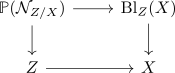

smooth blowup excision
Proposition
Let $\mathcal{F}: \mathrm{Sm}_{S}^{\mathrm{op}} \rightarrow \mathrm{Sp}$ be an A1 invariant, nisnevich sheaf. Then for any closed immersion $Z \hookrightarrow X$, $\mathcal{F}$ sends the following square to a cartesian square

Proof
- use the algebraic tubular neighbourhood theorem to prove the folowing result:
- use a similar strategy as in the purity theorem
- check a,b,c)
- a) a1 invariance
- b) zariksi
- c) nisnevich